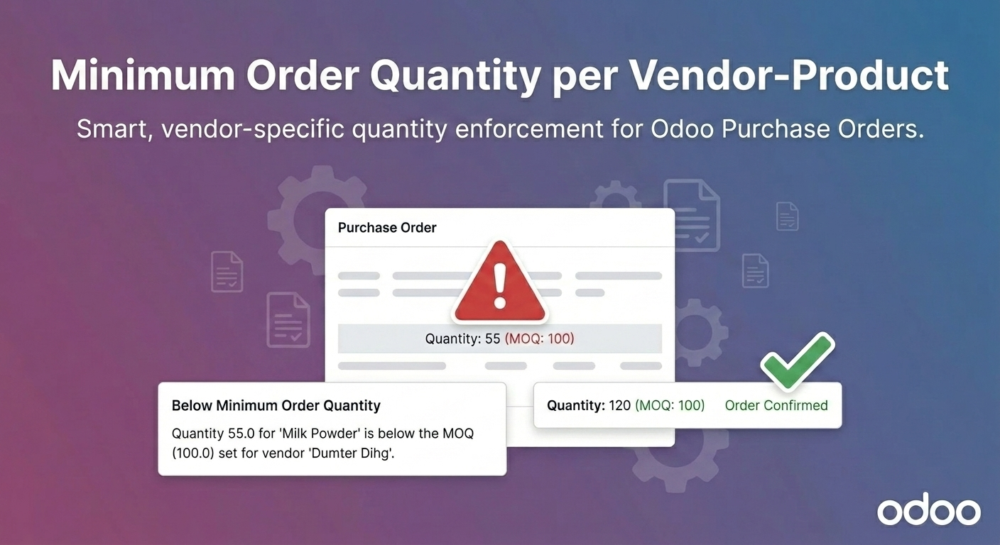
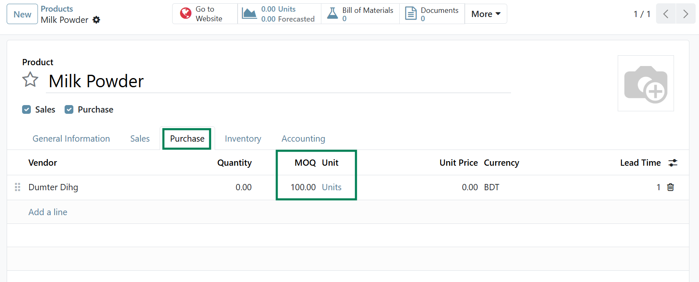
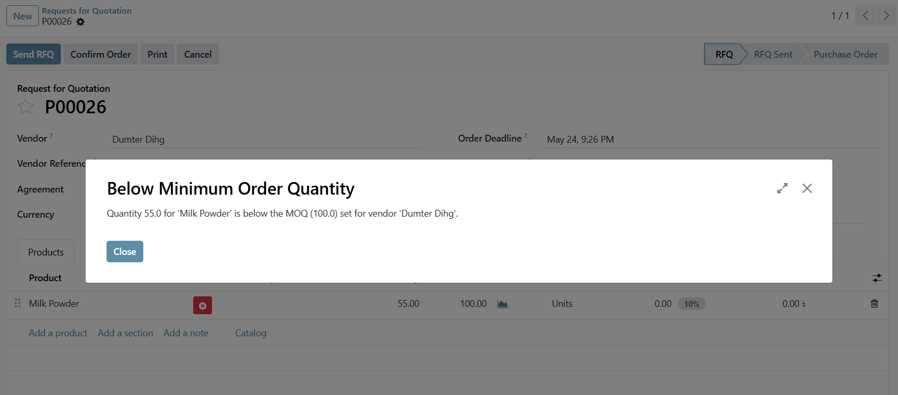

Odoo's vendor pricelists support quantity price breaks, but have no true Minimum Order Quantity enforcement. This module fills that gap — add a dedicated MOQ per vendor-product, and buyers see an immediate warning the moment they try to order below it. Non-blocking by design: buyers stay in control while being clearly informed.
|
📜
Dedicated MOQ Field
A dedicated MOQ column on each vendor row in the product's Purchase tab — separate from Odoo's price-break min_qty.
|
📋
Vendor MOQ on PO Lines
A read-only Vendor MOQ column appears on every Purchase Order line, auto-resolved from the selected vendor and product.
|
⚠️
Real-Time Warning Popup
When a buyer enters a quantity below the configured MOQ, a clear warning popup appears immediately on that line.
|
|
✅
Non-Blocking by Design
The warning informs — it does not block. Buyers retain full control, which means no workflow disruption.
|
🛒
RFQ & Confirmed POs
MOQ enforcement works on both Requests for Quotation and confirmed Purchase Orders — same experience throughout.
|
⚙️
Zero Impact on Price Breaks
Odoo's existing price-break logic (min_qty) is fully intact — MOQ is a separate, non-interfering field.
|
Open any product, navigate to the Purchase tab, and enter a value in the new MOQ column for each vendor row. That's the entire configuration — no settings screen, no extra menus. The MOQ column sits alongside the existing price-break fields without interfering with any existing logic.

Dedicated MOQ column on the vendor pricelist — separate from Odoo's existing min_qty price breaks.
When a buyer enters a quantity below the vendor's configured MOQ on a Purchase Order line, a clear warning popup appears immediately — showing which line triggered it and what the minimum is. The buyer is fully informed and can correct the quantity before confirming.

Warning popup on the Purchase Order — triggers immediately when quantity falls below the vendor's MOQ.
|
1
|
Set MOQ on each vendor row
Open any product → Purchase tab → enter an MOQ value in the new column for each vendor row.
|
|
2
|
Create a Purchase Order or RFQ
Select the vendor and product on a PO or RFQ line. The Vendor MOQ column is auto-populated from the pricelist.
|
|
3
|
Enter a quantity
If the ordered quantity is below the MOQ, a warning popup appears immediately — no confirmation required to trigger it.
|
|
4
|
Buyer corrects and confirms
The buyer updates the quantity to meet the minimum — or proceeds anyway. Non-blocking design keeps buyers in control.
|
We specialize in custom Odoo development, implementation, and business process consulting — building modules that solve real operational problems, thoroughly tested and ready for production.
| 🌐 consultive.io | | | ✉ contact@consultive.io | | | 📞 +880 1711 751571 |